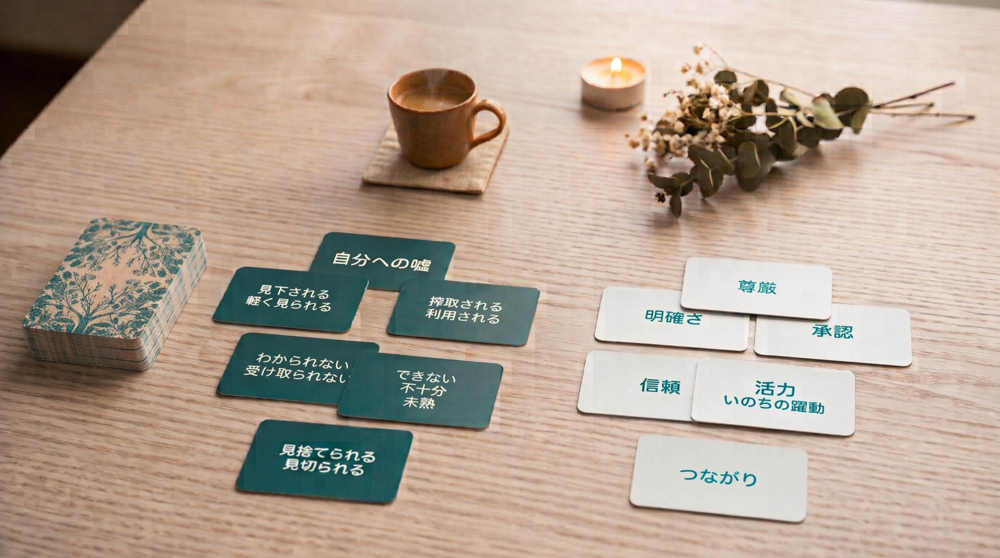
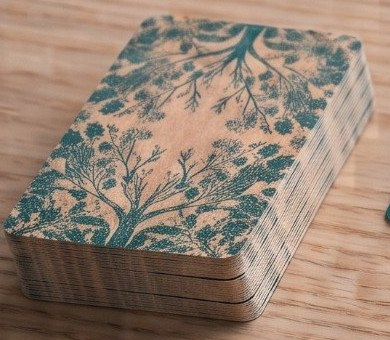
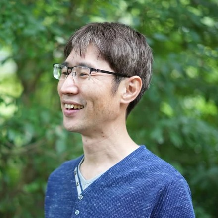

01
深刻にならずに、
「痛みのシステム」がくっきり見える
ゼロから言葉を絞り出すのではなく、カードを選んで眺めるだけ。傷をえぐられるような重苦しさはなく、「ああ、私の中はこうなっていたのか」と驚くほどクリアに紐解けます。
本当の願いを起点として生きるために
「今の自分でいい」と
心がホッと緩む対話の時間
木陰で休むように、静かな波の音を聞くように。
自分自身の「痛みのシステム」を知り、
その奥にある「本当の願い」へとつながる。

もし一つでも当てはまるなら、
このセッションはあなたのためのものです。
これが、繰り返すモヤモヤ・イライラ・苦しい人間関係のパターンの正体です
だから、あえて
「痛み」から見ていきます
いきなり願いを聞かれると、人は頭で「正しそうな言葉」を選んでしまいがち。
でも痛みは、「うっとくる」という身体の感覚として、嘘偽りなくキャッチできます。

自分自身の痛みのシステムを知り、その裏側に隠されている「本当の願い（大切にしたいこと）」へとつながるための対話ツールです。
ナビゲーターがエンジニア時代に培った「構造化の力」を活かし、心の仕組みを、誰もが深刻にならず視覚的に紐解けるように形にしました。
PAIN CARDS
痛みカード（54枚）
浅い階層（行動・思い込み）から
深い階層（根源的な痛み）まで網羅
WISH CARDS
願いカード（54枚）
本当に望んでいる状態
セッションの流れ
ゼロから言葉を絞り出すのではなく、カードを選んで眺めるだけ。傷をえぐられるような重苦しさはなく、「ああ、私の中はこうなっていたのか」と驚くほどクリアに紐解けます。
痛みを「なくすべき悪者」にせず、ただ「ある」と受け入れる。そのあとに願いカードを広げると、頭で考えた理想ではない「本当はこれが大切だったんだ」が自然と浮かび上がります。
「こうした方がいい」「それではダメだ」というジャッジは一切しません。どんな自分を出しても全て受け取られる安心感の中で、「今の自分でいいんだ」と自分に還っていく時間を伴走します。
体験すると
より深く自己探求したい方は、3ヶ月の伴走プログラム
「インナークエスト（ここち）」への入口としてもご活用いただけます。

『痛みと願いカード』作家・ナビゲーター
「痛み」を優しく包み込み、心の奥に眠る「本当の願い」を起点に生きる。
そんな人を増やすための対話の場を開いています。
私の想い
かつての私は「相手の機嫌を損ねたら見捨てられる」「自分には力がない」という強烈な恐れを抱え、周りの顔色を伺って「いい子」を演じ続けてきました。25年間のソフトウェアエンジニア時代には、自分の「痛み」すら感じないよう、完全に心を麻痺させていたのです。
心身が限界を迎え、ずっと避けてきた「無力感」や「見捨てられる恐怖」を「ただ、それがあったんだね」とそのまま受け入れたとき、そのすぐ裏側に「今ここにいる自分で、すでにどんな人とも深くつながっている」という純粋な願いが眠っていたことに気づきました。
痛みをなくそうとするのではなく、ただ優しく見つめることで、魂の本音（願い）に出会える。
身をもって体験したこの心の仕組みを、誰もが安心感の中で紐解けるように形にしたのが『痛みと願いカード』です。目の前の人が「だから私はこれを願っていたんだ！」と本当の自分につながる瞬間に立ち会うことは、私の「いのち」が最も震え、躍動する至高の時間です。
幼い頃の私は、体が小さく、内気で目立たない子どもでした。常に周りの大人の顔色や空気を伺い、波風を立てない「いい子」を頑張る毎日。当時の座右の銘は、子どもながらに「知らぬが仏」でした。
自分の本音も言わず、相手の深いところにも踏み込まず、ただじっとやり過ごせば嵐は過ぎ去る。深く関わって責任を負うのが怖くて、一定の距離を保って「うまく立ち回る」ことで、小さな自分を必死に守り、生き延びていたのです。
なぜ、そこまでして周りの顔色を伺っていたのか。幼い頃に家を閉め出された体験から、私の根底には「自分はいらない存在だ」「相手の機嫌を損ねたら、突然見捨てられる」という強烈な恐怖が刻み込まれていたからです。
「見捨てられないためには、相手を喜ばせ続けなければ」そう思い込んだ私は、必死に相手の求めることを察して応え続けました。
しかし、少年野球でどれだけ努力してもヒットを1本も打てないときや、大切な人が理不尽に怒られて悲しんでいる姿を前に何もできなかったとき、「自分には力がない」という感覚に触れると、そのまま「相手を喜ばせられない＝見捨てられる」という恐怖に直結したのです。
無力な自分に触れることも、見捨てられることも怖くて、常に相手に合わせてばかりいた私は、しだいに自分の意見や感情がわからなくなっていきました。
社会人になり、25年間ソフトウェアエンジニアとして働きました。
「常に期待に応え、相手を満足させる人間でいなければ」
「相手の気分を害するような本音は飲み込む」
見捨てられ、つながりが切れることを恐れるあまり、失敗しないよう安全圏に留まり、自分の気持ちを押し殺して働き続けました。しかし、自分を後回しにし続けた結果、ついに心身は限界を迎えます。
パソコンに向かっても手が動かなくなり、1日7.5時間働くエネルギーすら枯渇。どれだけ働いても「自分は役に立っていない」という虚無感に襲われました。
ある合宿で、周りの仲間が涙を流して感情を揺さぶられる中、私だけが一人、平然と座っていました。「なぜみんな泣いているんだろう？」私は傷つくことを避けるため、自分の「痛み」すら感じないよう、完全に心を麻痺させて生きていたのです。
「もう限界だ。このままでは魂が削られていく」その危機感から、自分の内面と向き合う探求が始まりました。
一番の辛い記憶である「閉め出された体験」を仲間に聴いてもらう中で、「本当に辛かったんだ」と受け入れて嘆き、同時に深い愛情の出来事でもあったと感じ、そこにあったすべてを「あったもの」として感じ直しました。
私を苦しめていたのは周りの環境ではなく、「嫌われる・見捨てられる」という自分自身の『恐れ』でした。
勇気を出して、隠してきた弱さや心の構造を会社の上司や大切な人に明かしてみると、恐れていたことは起こらず、深くつながり、わかってもらえる安心感を味わいました。
「自分を偽って、恐れから生きる必要なんてなかった。本当の自分を感じていい。本当の自分でいていい。これからは、本当の自分に生きるんだ！」
その気づきからわずか1ヶ月後、私は辞表を提出し、25年間勤めた会社を辞めて新たな道へ踏み出しました。
ところが、会社を辞めてからの最初の1年間、私は新たな壁にぶつかります。
「人の心を深く紐解く高度なスキルや認定資格がなければ、仕事にできない」と思い込み、「これは紐解きじゃないね」とダメ出しをされながら練習に明け暮れていたのです。完璧を目指そうとするほど苦しくなり、できない自分が膨らんでいく。
そんな葛藤の末、私はそのコミュニティを離れ、「何者かになろうとすること」を手放しました。代わりに始めたのは、徹底的な『自己愛（自分を満たすこと）』です。ただ自分が喜ぶこと、心が満たされることだけをする、それを自らに許しました。そして、内なる感覚のままに3ヶ月の伴走プログラム『インナークエスト』を開いてみました。
すると、当時追い求めていたスキルでなくても、目の前の人が自己を受容し、家族関係まで劇的に変わっていく奇跡を目の当たりにしたのです。
「完璧なスキルなんていらない。今の私のままで、すでに分かち合えるものが充分にある」
その確信が、私に揺るぎない自己信頼を与えてくれました。
自己探求を進めるとともに、数多くのセッション提供を重ねる中で、私はある真実を身をもって体感していきました。それは、「痛みの裏側にこそ、本当の願いがある」ということ。
かつて「無力感」や「見捨てられる恐怖」に怯え、本音を押し隠してきた私の痛みの裏側には、実は「今ここにいる自分で、すでにどんな人とも深くつながっている」という純粋な願いがあったのです。
しかし、こうした本当の願いには、頭（思考）で探しても綺麗な言葉ばかりが並んでなかなか辿り着けません。願いに比べて「痛み」は、体の感覚としてキャッチしやすい大切なサイン。まずは自分の痛みを「あるね」と優しく見つめ、じっくり味わうことで、その奥にある魂の本音が見えてきます。
この心の仕組みを、エンジニア時代の構造化の力を活かして誰もが深刻にならず安心感の中で視覚的に整理できるよう形にしたのが、各54枚の『痛みカード』と『願いカード』です。
今、私はこの『痛みと願いカード』や伴走プログラム『インナークエスト』を通じて、相手の方の「本当の願い」が立ち上がる瞬間に寄り添っています。
「痛み」を入り口にしてその奥の「願い」へと触れ、相手の方と命がひとつに溶け合うような深いつながりを感じる時間。「だから私はこう願っていたんだ！」とご自身の本音に出会い、内側から生きる力が湧いてくる姿を目の当たりにする瞬間は、朝から晩まで毎日やっていても飽きないほど、私の「いのち」が最も震え、躍動する至高の時間です。
かつては一人で抱え込み、想いや感情を表現することを恐れていた私も、今は頼もしい仲間たちとわちゃわちゃと支え合いながら、自分の言葉や場を世界に広げています。
日常でも、温泉の長湯やひとりカラオケで自分を満たし、大切な家族や仲間たちと愛を循環させる毎日。「どんな自分も、どんな人も、ただ在るだけで愛おしく、つながっている」という絶対的な安心感の中で、今を生きています。
一番安心できる環境でお話しできるよう、柔軟なスタイルで提供しております。
誰かになろうとしなくていい。
木陰で休むように、静かな波の音を聴くように。
あなたがあなた自身と深くつながれる時間を、
心から楽しみにしています。